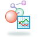

| Step 1: Search Data Search for and add data sets (e.g. microarray data and associated pathology information) to an experiment |
|
|  | Step 2: Analyze and Visualize Data Analyze (e.g. cluster) and visualize (e.g. in the context of pathways) data sets within an experiment. |